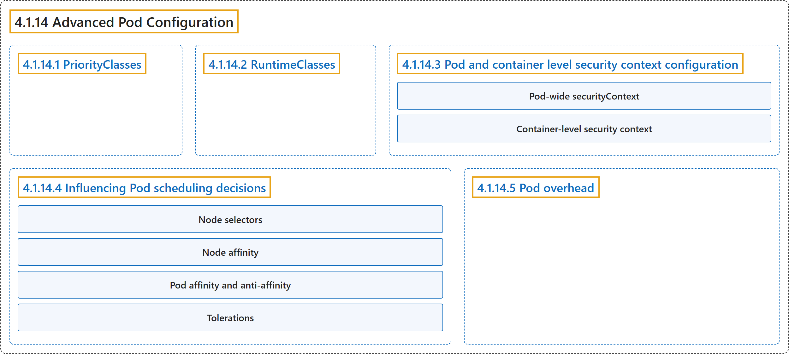

4.1.14 Advanced Pod Configuration
Classification

Glossary
| Term | Definition | 中文翻译 | Source |
|---|---|---|---|
| 4.1.14 Advanced Pod Configuration Pod 高级配置 |
(context) "This page covers advanced Pod configuration topics" | （语境）本页介绍 Pod 的高级配置主题 | The Kubernetes Authors, n.d., "Advanced Pod Configuration", para. 1 |
| 4.1.14.1 PriorityClasses PriorityClass |
"PriorityClasses allow you to set the importance of Pods relative to other Pods." | PriorityClass 让你相对于其他 Pod 设定 Pod 的重要性。 | The Kubernetes Authors, n.d., "PriorityClasses", para. 1 |
| 4.1.14.2 RuntimeClasses RuntimeClass |
"A RuntimeClass allows you to specify the low-level container runtime for a Pod." | RuntimeClass 让你为 Pod 指定底层容器运行时。 | The Kubernetes Authors, n.d., "RuntimeClasses", para. 1 |
| 4.1.14.3 Pod and container level security context configuration Pod 与容器级安全上下文配置 |
"The Security context field in the Pod specification provides granular control over security settings for Pods and containers." |
Pod 规约中的 Security context 字段，为 Pod 和容器的安全设置提供细粒度控制。 |
The Kubernetes Authors, n.d., "Pod and container level security context configuration", para. 1 |
| Pod-wide securityContext Pod 范围的 securityContext |
(context) "Some aspects of security apply to the whole Pod; for other aspects, you might want to set a default, without any container-level overrides." | （语境）有些安全方面适用于整个 Pod；另一些方面你可能想设置默认值，而不做任何容器级覆盖。 | The Kubernetes Authors, n.d., "Pod-wide securityContext", para. 1 |
| Container-level security context 容器级安全上下文 |
"You can specify the security context just for a specific container." | 你可以指定安全上下文，只针对某个特定容器。 | The Kubernetes Authors, n.d., "Container-level security context", para. 1 |
| 4.1.14.4 Influencing Pod scheduling decisions 影响 Pod 调度决策 |
"Kubernetes provides several mechanisms to control which nodes your Pods are scheduled on." | Kubernetes 提供多种机制来控制 Pod 被调度到哪些节点。 | The Kubernetes Authors, n.d., "Influencing Pod scheduling decisions", para. 1 |
| Node selectors 节点选择器 |
"The simplest form of node selection constraint:" | 最简单形式的节点选择约束： | The Kubernetes Authors, n.d., "Node selectors", para. 1 |
| Node affinity 节点亲和性 |
"Node affinity allows you to specify rules that constrain which nodes your Pod can be scheduled on." | 节点亲和性让你指定规则，约束 Pod 可以被调度到哪些节点上。 | The Kubernetes Authors, n.d., "Node affinity", para. 1 |
| Pod affinity and anti-affinity Pod 亲和性与反亲和性 |
"In addition to node affinity, you can also constrain which nodes a Pod can be scheduled on based on the labels of other Pods that are already running on nodes." | 除了节点亲和性，你还可以约束 Pod 可以被调度到哪些节点，依据是节点上已在运行的其他 Pod 的标签。 | The Kubernetes Authors, n.d., "Pod affinity and anti-affinity", para. 1 |
| Tolerations 容忍度 |
"Tolerations allow Pods to be scheduled on nodes with matching taints:" | 容忍度允许 Pod 被调度到带有匹配污点的节点上： | The Kubernetes Authors, n.d., "Tolerations", para. 1 |
| 4.1.14.5 Pod overhead Pod 开销 |
"Pod overhead allows you to account for the resources consumed by the Pod infrastructure on top of the container requests and limits." | Pod 开销让你在容器请求和限制之外，计入 Pod 基础设施所消耗的资源。 | The Kubernetes Authors, n.d., "Pod overhead", para. 1 |
References
The Kubernetes Authors. (n.d.). Advanced Pod Configuration. Kubernetes Documentation. Retrieved October 31, 2026, from https://kubernetes.io/docs/concepts/workloads/pods/advanced-pod-config/